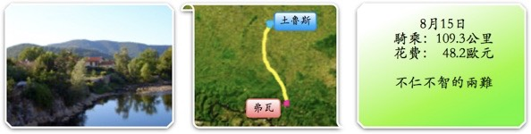
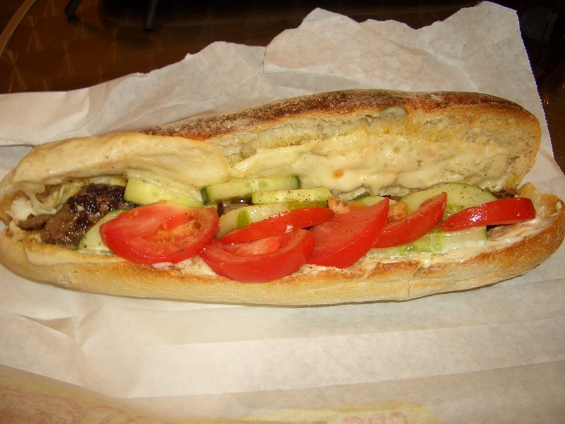

今天是到法國的第三十天，也是失去方向的一天。不知該往何處騎。
『天亮才知道今天要往騎、天黑才知道今天要睡哪。』其實是幸福的。
因為有個前進的方向，明確的目標可以去追求，也有個落腳處能過夜，有何不好？
法國大公休的一天，自己也跟著想放假，晚上睡前想說天亮了，答案自然會出現，睡吧∼
早上中國女生送了我一粒葡萄柚，讓我帶著路上吃，問我今天要往哪騎？
『我自己也不知道要往哪騎才好。』
借用房東太太的電腦上傳遊記，她也問我，今天打算騎去哪邊呢？
『我真的不知道下一站要去哪邊。』
從波爾多直接騎到土魯斯，只花了兩天，看似相當的有效率，但卻完全跳過了庇里牛斯山的部份。
那現在是要回頭向西，往山裡騎呢？還是向東前進，完成環法的行程？
省掉了庇里牛斯山，好像少了點什麼東西似的，感覺逃避了什麼不確定的事物，心裡覺得怪怪的。
若繼續往前騎的話，那麼騎完一圈法國，回台灣，這輩子大概不會有機會騎庇里牛斯山了。
若回頭往後騎的話，真的太不合常理，路線亂繞一通，入山延誤的這幾天，還能完成環法嗎？
思考了一整夜，無解。天亮了，邊收拾行李邊思考，到底要往哪邊騎？無解。
總不能因為不知道往哪騎，就哪也不去吧？
好困難的抉擇，往前還是往後，越想越頭大....哎呀，無比的痛苦。
從房東太太那拿到了一張土魯斯的地圖，這樣就能在城市中有閒晃的依據了。
帶著滿腦子的不確定感，說出發也很奇怪，因為沒有目的地，要怎麼出發？
原來一個人少了方向，會那麼樣的令人失去動力，很提不起精神啦，除了無力還是無力。
既然無法決定往哪邊騎，那就在土魯斯晃晃吧，當作城市觀光也好。

用磚頭蓋的建築物，其實很有詩意，它叫做『薔薇磚』，法國人說它會隨著清晨、中午、黃昏而變色。
CAPITOLIUM
這是市政府前的廣場，蠻寬廣的。
廣場後方是個小公園，還有一座塔一般的建築物
大家都很悠閒的在聊天。
土魯斯是很適合用腳踏車旅遊的地方，自然就會有出租腳踏車的服務。
這應該還不到達十八禁的程度
美麗的街道，迴盪的鐘聲，悠閒的城市。
就這麼樣的在土魯斯閒晃，一點都沒有出發的動力。
午餐就吃『愛的三明治』，店裡面的東西都是用Love開頭，愛的汽水、愛的薯條、愛的餅乾這樣。
三明治加的是美乃滋，很台灣風味，加上大量的新鮮蔬菜，吃起來格外開心。4.7歐元。

離開前再買了一片手工巧克力餅乾，0.9歐元，當點心。
唉∼無頭蒼蠅，不知往哪飛，這座橋是最有歷史的橋，名字卻是『新橋』，跟巴黎一樣。
橋上有放一張對照表，從這邊看出去的景色是哪棟建築物，都有清楚的說明。
再這麼晃下去也不是辦法，都已經下午一點了，還沒出發，自己都覺得有點誇張。
既然不知道要往東還是往西，那就往南吧！
沿著運河旁的單車道向南走。
往南騎一天，就多一天的時間可以思考到底要往東還是往西。
從土魯斯往南的話...（翻開地圖）就是一個叫弗瓦（FOIX）的城市。
大約距離一百公里，可以體驗一下庇里牛斯山的風味，若是對爬山感到後悔的話，
轉往西邊的卡卡松尼也是一天的路程就可以到，算是折衷的選擇。
因為公休的緣故，商店休息的比例比星期天還要高，看到有營業的超市，就補充了一下糧食。
買了一串葡萄，1.99歐元。
還有一罐土魯斯的名產罐頭，鴨肉+香腸燉白豆，才1.65歐元，比上館子吃便宜多了。
如果不合胃口的話，丟掉也不會心痛。
先走N20->D12->D4->D191，雖然無法走N20直達，但也沒繞多遠的路。
只是選擇往南走，雖是折衷，但還是覺得不是滋味，不東不西的，太不乾脆，所以騎起車來還是很沒力。
嫌太陽太大，就躲在樹下吃葡萄兼上網，騎的時候覺得沒動力，不騎的時候更加消沈。
太陽大概從12點開始就會很晒很晒的持續到下午五∼六點，請問你打算休息到什麼時候才上路呢？
下午四點，自己都覺得慚愧，累積總里程只騎了27公里，唉.....到底在幹什麼呢？
出發六個小時了，只騎了27公里，用走的都比這個遠。
如果身體像氣球，那今天不知道被什麼東西給戳了一個洞，氣都洩光了。
好像台灣會燒到冥間的紙人。
這種旅館是我最喜歡的風格，『無星等』、『附設餐廳』、『偏僻＆便宜』，可惜只是半路經過，不然一定住這。
騎著騎著，開始有到山區的感覺，右手邊的地勢逐漸增高，隆起成山脈，道路的陡度也有了起伏。
傳統的農舍，放著木材、手推車、小麥方塊等。
越到山裡，景色越漂亮，山勢綿延，小溪清澈，令人心曠神怡。
大大的山中湖。
相較於人工建築物的大自然驚奇
雖然下午四點才開始有往目標騎的感覺，但還是七點半就到了目的地，弗瓦。
簡單的說，它是建在山中的一個小鎮，但觀光業蠻發達的。

入鎮前有個告示牌，本鎮有8家旅館，共計225間房間。
希望還有留一間房讓我過夜，深山的夜晚是很寒冷的.....
各位觀光客，今天已經是三天連假的最後一天了，為什麼還有那麼多人在這邊渡假呢？
餐廳的桌椅都擺到馬路上來了，每家都一樣高朋滿座，這種情況下，225間房間夠用嗎？
蠻漂亮的海報，大概FOIX有什麼活動節慶的要舉行。
偶然發現山巖上居然蓋著城堡！
真是太厲害了，不知道古代人是怎麼蓋上去的。
可惜城堡漂亮也沒有用呀，又不可能收留我過夜。
告示牌說有8間旅館，每間都問過了一遍，除了1間休假，5間客滿，1間超貴之外。
只剩下唯一的選擇，39歐元一晚上，比手畫腳的說能不能算便宜一點。
老闆很堅決的說不行。
相當堅毅的個性，寧可房間空著沒收入，也不肯降價出租。
這時候已經晚上九點了，除了我這種旅行者，應該不會有人在找房間了吧？
殺價的技巧之一，價錢談不攏的話，就假裝不滿意要離開，通常老闆會挽留你下來。
我說真的太貴了，單人跟雙人居然都是一樣的價錢，這樣我蠻吃虧的，那只好跟你說抱歉了。
牽車轉身就要離開，心裡想的是『留住我，留住我，留住我呀！』
偷偷回頭一看，老闆已經跑去喝咖啡了 /_\ 有沒有我這個客人都沒差一樣。
就這麼回頭有點丟臉，又去街上繞了一下，十分鐘後再回旅館門口，老闆還是在喝咖啡。
『到處都客滿了...所以....我還是想要剛剛那間房。』
自己都覺得很窩囊，寧可被貴到，也沒有種去睡街頭，太沒志氣了。
晚餐就把超市買的罐頭隔水加熱了來吃，味道蠻像台灣的速食調理包，只是稍微鹹了一點。
附帶提一下，旅行的話別忘了帶雙筷子或是湯匙，不然很多時候沒有餐具，就要用牙刷柄來充當。
今天是很奇怪的一天，如果倒帶從來一次的話，還是不知道往東好還是往西好。
而且同樣的難題，明天早上又要上演一次，不同的是，已經不能再往南騎了，對面是西班牙∼
仁者要山、智者要水。
無奈心胸無仁義，腦袋少智慧，山山水水，水水山山，該往何處去的好呀？
下樓點杯咖啡，紓解一下迷惑的心情，希望別失眠∼